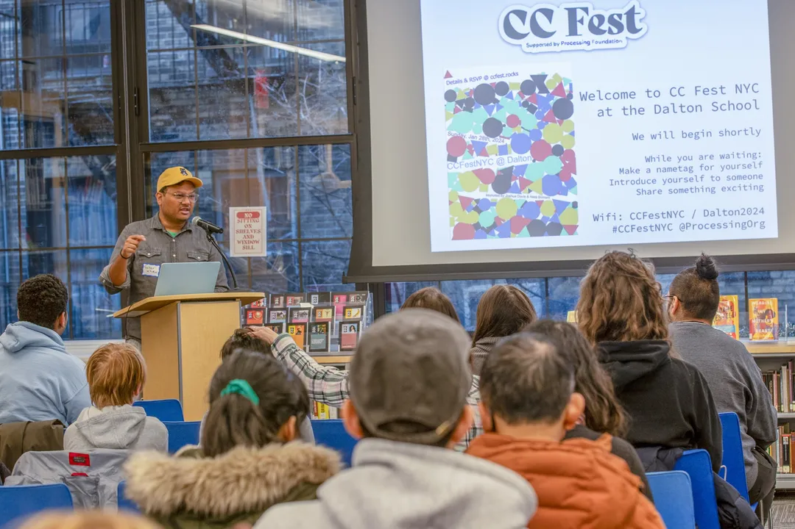
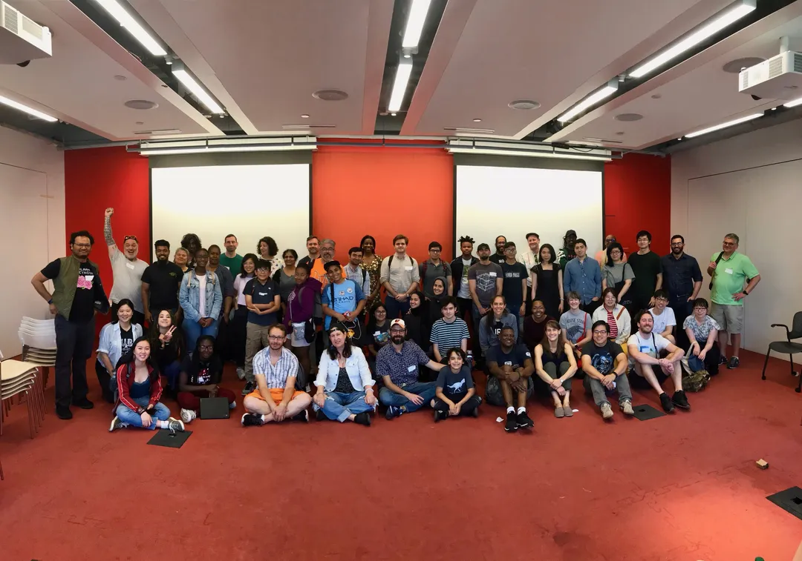
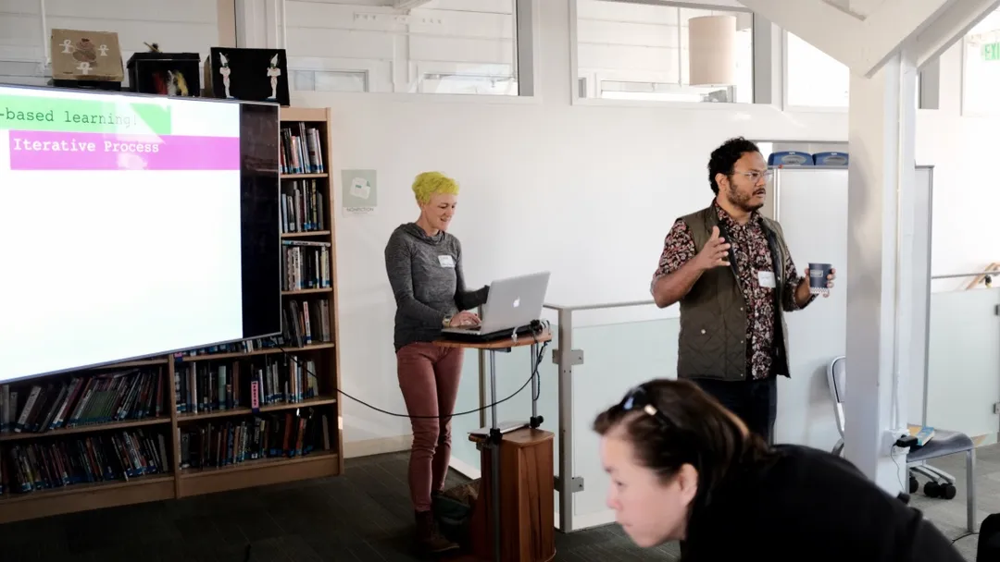

Creative coding for allA living history · 2016 to 2026
Ten years. Still curious.
What happens when you give people a little code, a place to gather, and permission to play?
CC Fest brings artists, teachers and beginners together to make art with code. It began at NYU ITP in October 2016 and has grown into festivals and camps, in person and online.
Ten years of creative coding · pick a word
10 years of
Creativity
Art · code · communityScroll to explore a decade together ↓
01 · The beginningNew York City, 2016
It started with a room. And a question.
In October 2016, around 40 people came together at NYU ITP to see what they could make with code.
Saber Khan, Danny Fenjves and Stephen Lewis organized the first CC Fest. Dan Shiffman opened with a question about why creating software should matter to people from different backgrounds.
The invitation was simple: bring your curiosity. Learn beside artists, teachers and beginners. Make something, ask a question, then try again.
You don’t have to be a coder. You just have to be curious.
The invitation, then and now

New York · 2024
Photo by Asher Dorlester

New York · 2019
Photo by Colin Samuels and Ella Chung

San Francisco · 2018
Photo by Ryan Gallagher and Eric Wild
02 · A decade, togetherFollow the thread
A small gathering. An expanding circle.
From shared tables in New York, Los Angeles and San Francisco to shared screens around the world.
The whole decade, in one view
24festival records, 2016 to March 2026
14in person
10virtual
6camps, 2020 to 2026
2016 to 2019
The first festival was one room at NYU ITP, with about forty people. Over the next three years the same workshop format went to Los Angeles and San Francisco, and came back to New York. Between 2016 and 2019 there were twelve in-person festivals, with workshops in p5.js, Processing and interactive art. Read the 2016 account ↗
2020 to 2022
In July 2020 the festival moved into a shared online space. The first virtual CC Fest also raised funds for TRANSIT ART, a youth program. From 2020 to 2022 all five festivals were virtual, with workshops on p5.js, Python, Hydra, machine learning and games. The July 2020 festival ↗
2023 and 2024
In January 2023 the festival came back to a room in New York, at the Dalton School, with keynotes by Dan Shiffman and Christy Crawford. It returned there in January 2024. Online festivals continued alongside, in March 2023 and July 2024. The January 2023 festival ↗
2025 and 2026
Teacher Camp began in the fall of 2024 with ten online sessions on making art with p5.js. In 2025 there were two five-session camps, in spring and fall. The camp work continued in 2026 with a spring coding camp and a free summer camp, Learning Machines, whose sessions were recorded. Camps are counted separately from festivals. Learning Machines ↗
Choose a year to open its festivals below the chart. The timeline below filters to the same year.
Where we gathered, year by year. Every festival record, in order.
NYCLASFOnlineCamp
Select a year to explore it. One block = one festival or camp. Dashed blocks are camps.
24 festival records, 2016 to March 2026 · 6 camps, 2020 to summer 2026The October 2026 event is upcoming and not counted here.
Counts describe the records included here, not total attendance or a claim of completeness. The September 2017 LA event is included using its original dated poster.
20161 festivalNew York
October 22A room for the curiousNew York · NYU ITP · In person
20173 festivalsNew York, Los Angeles
April 23An invitation worth repeatingNew York · NYU MAGNET · In person
September 23The invitation travels westLos Angeles · UCLA Design Media Arts · In person
November 12Learning side by sideNew York · NYU ITP · In person
20184 festivalsNew York, Los Angeles, San Francisco
May 5A spring gathering in BrooklynNew York · NYU MAGNET · In person
September 8A West Coast gatheringLos Angeles · UCLA Design Media Arts · In person
October 13A Bay Area homeSan Francisco · San Francisco Friends School · In person
November 10Back to the workshop tableNew York · NYU ITP · In person
20194 festivalsNew York, San Francisco, Los Angeles
June 8Identity, performance, playNew York · NYU MAGNET · In person
October 19More room to experimentSan Francisco · San Francisco Friends School · In person
October 27Creative code on the coastLos Angeles · Crossroads School, Santa Monica · In person
December 8One more room before the world changedNew York · NYU ITP, Brooklyn · In person
20201 festivalOnline, 1 camp
July 11The invitation goes onlineOnline · Virtual
July 2020Infosys Pathfinders: Creative Coding with p5.js CampOnline
20212 festivalsOnline
January 24A bigger creative vocabularyOnline · Virtual
August 22Keeping the connection goingOnline · Virtual
20222 festivalsOnline
January 30Who gets to make the tools?Online · Virtual
June 18Playfulness, possibility, perspectiveOnline · Virtual
20232 festivalsNew York, Online
January 28Back in the roomNew York · The Dalton School · In person
March 25New ways to inhabit the webOnline · Virtual
20242 festivalsNew York, Online, 1 camp
January 28Art, code, and everything betweenNew York · The Dalton School · In person
July 21Across screens and disciplinesOnline · Virtual
Fall 2024CC Fest Teacher Camp CampOnline · Zoom
20252 festivalsOnline, 2 camps
March 15Many ways to makeOnline · Virtual
Spring 2025CC Fest camp CampOnline
September 28The practice keeps growingOnline · Virtual
Fall 2025CC Fest Teacher Camp CampOnline
20261 festivalOnline, 2 camps, 2 upcoming
March 21Into the tenth anniversary yearOnline · Virtual
Spring 2026CC Fest Coding Camp CampOnline
Summer 2026Learning Machines: Text, Images, Video CampOnline · Zoom
October 17Virtual CC Fest 2026 UpcomingOnline · Virtual
November to DecemberVisible Java: Processing for AP CS A Upcoming campOnline · Live online sessions
03 · The timelineFestivals and camps, in order
Filter by year or place. Open a festival for its story and its poster.
24 documented festivals
2016October 22
New York · NYU ITP · In person
A room for the curious
Read more
Forty people gathered for the first CC Fest. Saber Khan, Danny Fenjves and Stephen Lewis brought together three workshop tracks, with an opening keynote by Dan Shiffman.
Teachers and learners gathered at UCLA to explore digital art, animation and games. The original event poster dates this Los Angeles gathering to September 23, 2017.
Kit Kuksenok and Anil Dash gave keynotes at the spring virtual festival. Workshops explored accessibility, computational poetry, generative art and creative learning.
A curated record, not a complete event census. Dates are reconciled against each festival's public page and its original poster. Duplicate and phantom database entries are excluded.
Browse all 23 posters, in date order
Posters, in order.
Each poster from the public archive, oldest first. Select a poster to see it larger. A designer is credited only where one is named.
2017 · New York2017 · Los Angeles2017 · New York2018 · New York2018 · Los Angeles2018 · San Francisco2018 · New York2019 · New York2019 · San Francisco2019 · Los AngelesKeren Megory-Cohen2019 · New York2020 · OnlineJolina Kitaji Clement2021 · Online2021 · Online2022 · Online2022 · OnlineKatie Chan2023 · New YorkTheo Chan2023 · OnlineJoo Park2024 · New York2024 · OnlineShristi Singh2025 · OnlineShristi Singh2025 · OnlineShristi Singh2026 · OnlineFrancisca José Rodrigues
Posters are shown as the archive holds them. The 2016 festival has no poster in the set.
Est. October 2016NYC to everywhere
10
Years of making roomfor something new.
04 · The shape of the storySmall beginnings, lasting connections
More than a number.
A time people made space to learn from one another, in numbers: every figure here comes from a documented festival or camp, or from an anonymized count of registration records.
~40
people at the first festival
NYU ITP · October 2016
3
in-person city communities
New York · Los Angeles · San Francisco
2020
the invitation went online
First virtual festival · July 11
The community in numbers
Anonymized, aggregate figures from registration records. Minors are included in every figure.
5,189registrations across 23 of 24 festivals.
4,036estimated people, matched by email address.
17.1%of estimated people (691) registered for two or more festivals.
+208.3%growth in the estimated cumulative count of people, end of 2019 to March 2026.
175estimated people registered for a camp, across 4 of 6 camps, fall 2024 to summer 2026.
44.1%of registrants attended, across 3 virtual festivals in 2025 and 2026.
05 · The people make the festivalFrom the photo archive
You had to be there.
The talks, the tables, the moment something clicks. A few glimpses of a community learning together.
Open a photograph to see it larger, with its original credit.
Pictures from CC Fest NYC at ITP-NYU in November 2017 by Ellen Nickels and Dominic Barrett.
06 · The invitation becomes a practiceTeacher Camp · since 2024
Make something. Then pass it on.
What if a festival could keep going in the classroom?
Teacher Camp began in 2024. In 2025 it ran as two free, five-session experiences: time to explore shapes, motion, interaction, generative art, and ways of teaching with code.
The coding camp’s tools are public. A free online camp for AP CS A teachers runs in November and December 2026.